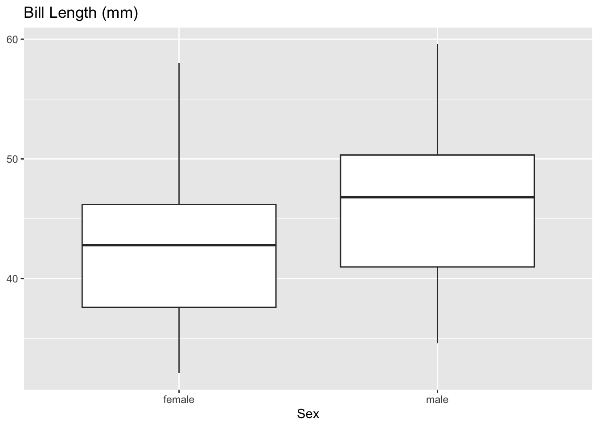
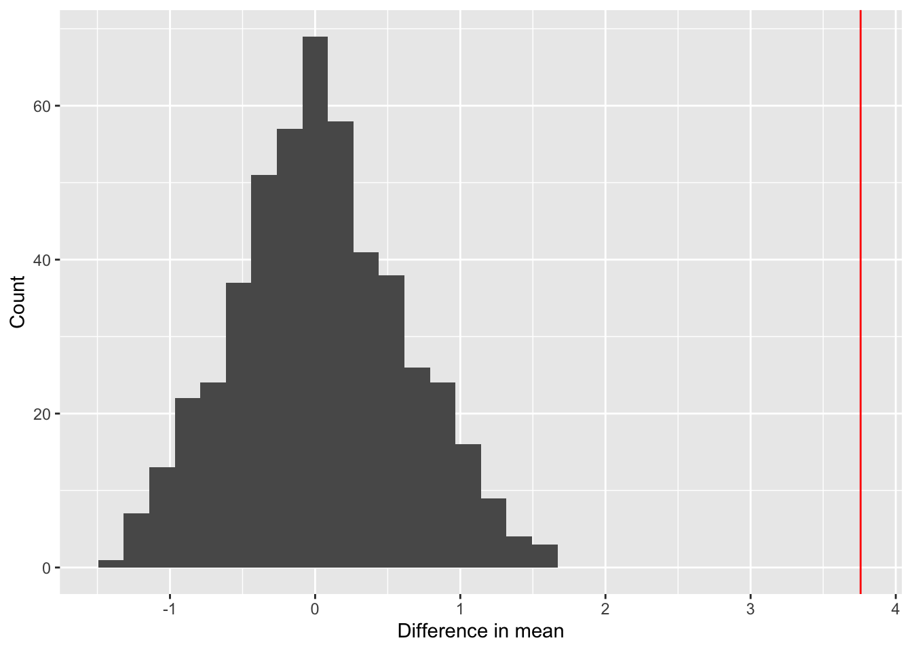

Code
library(tidyverse)
library(dplyr)
library(palmerpenguins)I investigate the difference in bill length between male and female penguins from the Palmer Penguins data set. Generally, male penguins are slightly larger than female penguins, but in some species the difference is minimal. I hope to determine if bill length is a good indicator of sex for the species in the data set (Adelie, Gentoo, and Chinstrap). The hypothesis I’m testing is that male penguins have longer bills than females. To do this, I use a permutation test to compare the observed bill length values for male and female penguins with a random distribution.
library(tidyverse)
library(dplyr)
library(palmerpenguins)view(penguins)penguin_data <- penguins %>%
filter(!is.na(sex))
penguin_data %>%
ggplot(aes(
x = sex,
y = bill_length_mm
)) +
geom_boxplot() +
labs(x = "Sex",
y = NULL,
title = "Bill Length (mm)")
Average bill length for males is slightly higher than females in the observed data.
penguin_data %>%
group_by(sex) %>%
summarize(avg_bill = mean(bill_length_mm, na.rm = TRUE),
med_bill = median(bill_length_mm, na.rm = TRUE)) %>%
summarize(avg_diff = diff(avg_bill),
med_diff = diff(med_bill))# A tibble: 1 × 2
avg_diff med_diff
<dbl> <dbl>
1 3.76 4permutation <- function(n, data){
data %>%
select(sex, bill_length_mm) %>%
filter(!is.na(bill_length_mm)) %>%
mutate(bill_perm = sample(bill_length_mm, replace = FALSE)) %>%
group_by(sex) %>%
summarize(obs_avg = mean(bill_length_mm),
obs_med = median(bill_length_mm),
perm_avg = mean(bill_perm),
perm_med = median(bill_perm)) %>%
summarize(obs_avg_diff = diff(obs_avg),
obs_med_diff = diff(obs_med),
perm_avg_diff = diff(perm_avg),
perm_med_diff = diff(perm_med),
rep = n)
}
map(c(1:5), permutation, data = penguin_data) %>%
list_rbind()# A tibble: 5 × 5
obs_avg_diff obs_med_diff perm_avg_diff perm_med_diff rep
<dbl> <dbl> <dbl> <dbl> <int>
1 3.76 4 0.490 1.20 1
2 3.76 4 1.22 2.30 2
3 3.76 4 -0.930 -2.15 3
4 3.76 4 -0.357 1.55 4
5 3.76 4 -0.913 -1.75 5The permutation function creates a “bill_perm” variable, which randomly selects a value from the bill_length_mm column and assigns it a new row. It does this for each row, so that the bill_perm column is randomly swapped bill length values. Then, it groups the rows by sex (male and female, NAs previously removed) and summarizes over the average and median of both the observed data (bill_length_mm) and the random data (bill_perm). Finally, it summarizes again using the diff function to show the difference between the bill_perm average and median between sexes.
set.seed(131)
perm_data <-
map(c(1:500), permutation, data = penguin_data) %>%
list_rbind()The map function inputs a number vector into the permutation function. The function takes the argument n as the number of repetitions, so I map a vector 1:500 into the function to repeat it 500 times with the penguin data to generate 500 average bill length differences between male and female penguins under random chance.
perm_data %>%
ggplot(aes(
x = perm_avg_diff)) +
geom_histogram() +
geom_vline(aes(xintercept = obs_avg_diff), color = "red") +
labs(x = "Difference in mean",
y = "Count")
This histograms shows the distribution of the 500 differences between mean bill lengths from the randomly sorted bill length values. The red line is the observed difference in mean bill lengths at 3.76.
perm_data %>%
ggplot(aes(
x = perm_med_diff)) +
geom_histogram() +
geom_vline(aes(xintercept = obs_med_diff), color = "red") +
labs(
x = "Difference in median",
y = "Count",
)
This histogram shows the distribution of differences in medians between male and female from the random sort. The red line is the observed difference in medians of 4.
As can be seen in the graphs, p-values for both average difference and median difference are zero. Under the random distribution, the observed differences have a 0% chance to occur.
perm_data %>%
summarize(pvalue_avg = mean(perm_avg_diff > obs_avg_diff),
pvalue_med = mean(perm_med_diff > obs_med_diff))# A tibble: 1 × 2
pvalue_avg pvalue_med
<dbl> <dbl>
1 0 0Based on these findings, the observed mean and median differences could not occur if bill length was distributed randomly (regardless of sex). The average male bill length is 3.76 mm greater than the female average, and the median is 4 mm greater. The permutation test shows that this observed difference is significant, and we can reject both null hypotheses for mean and median.
Data:
Horst AM, Hill AP, Gorman KB (2020). palmerpenguins: Palmer Archipelago (Antarctica) penguin data. R package version 0.1.0. https://allisonhorst.github.io/palmerpenguins/. doi: 10.5281/zenodo.3960218.